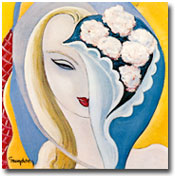
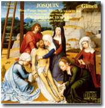

|

イギリスの伝承童謡に「クリスマスの12日間」という数え歌がある。「クリスマスの第一夜に、愛する人が梨の木にいるヤマウズラをくれた」で始まり、第十二夜まで一つずつ増えるプレゼントを加えながら同じことをくり返し歌っていく。だんだん長くなってくる歌詞をくり返し歌っていても不思議と飽きないし、なんだかとても楽しい。この手の数え歌はたぶん世界中にあるだろう。
数え歌のほかにも、＜くり返す音楽＞はいろいろある。
たとえばダンスの音楽。太鼓が強烈なリズムをくり返すアフリカの音楽。アラベスク（唐草模様）のように同じようなパターンをくり返すアラブの古典音楽。これも独特の渦巻き模様に通じているかのようなケルトの伝統音楽。映画「タイタニック」でもにぎやかに演奏されていたあのダンス音楽だ。ケルトといえばアイルランド出身のエンヤの音楽も、「オンリー・タイム」などひたすら同じことのくり返しである。また、ブラジルはリオのカーニヴァルで有名なサンバのリズム。タンゴ、マンボ、スカ、レゲエ……ラテンのリズムはダンスのリズム。まさにくり返しの宝庫である。スペインの舞曲ボレロのリズムと二つのメロディを、楽器と音量を変えながら最初から最後までくり返すラヴェルの管弦楽曲「ボレロ」は、舞踏家が自ら踊るために作曲を依頼したものだという。阿波踊りも、フォークダンスも、踊るための音楽はみなくり返す。それが楽しくて、人々は熱狂する。
最近ではパラパラのユーロビートや、クラブ御用達の打ち込み系の音楽。源流は1970年代に始まるYMOやクラフトワークなどのテクノにさかのぼる。生身の人間が創り出す音の不揃いさを排した、同一で均質な機械音の反復。それによって引き起こされるトランス状態は、たとえばサンバの熱狂・興奮と同じようでいて、どこか違う気もする。
1960年代後半にアメリカで実験的に作られたミニマル・ミュージックは、コンピューターを使って短い音型を延々とくり返す音楽だ。フィリップ・グラスの「浜辺のアインシュタイン」など、映画やCMで耳にするが、音だけ聴くとなると受け止め方は様々だろう。響きの細かな差異を聴き取る楽しみに耽るか、すぐに飽きるか、快感を覚えるか、気がおかしくなるか。「ハノンピアノ教本」を弾いた経験のある人ならわかるだろう。逃げ出したくなるような、このおそろしく単調で機械的な練習曲集の中にも、作者ハノンが言うように「非常に面白く」感じる瞬間がないわけではない。
楽器屋でギターの試し弾きの定番として疎まれている（？）ディープ・パープル「スモーク・オン・ザ・ウォーター」のイントロをはじめ、ジャズやブルースやロックのリフのくり返しは、それにからむサウンド全体の魅力もあって、弾く側も聴く側も快感に引き込んでいく。ビートルズ「ヘイ、ジュード」のラストでくり返される「ラララ……」で歌われるメロディや、デレク＆ドミノス（というかエリック・クラプトンの）「レイラ」のイントロと後半のインストゥルメンタル部分など、挙げたらキリがない。コンサートではよく、サビのメロディを会場の観客といっしょにくり返し歌って盛り上げていく。演奏者も観客も、みんなハイになる。くり返しの魔法にかかるのだ。
同じメロディのくり返しなら、遠い昔のヨーロッパにすばらしい例がある。15〜16世紀のルネサンス、ダ・ヴィンチやミケランジェロと同時代の作曲家ジョスカン・デ・プレのミサ曲「ラ・ソ・ファ・レ・ミ」では、ラ-ソ-ファ-レ-ミというフレーズがテノール中心に200回以上くり返され、また一味違った陶酔感をもたらす。パートを代えながらのくり返し（模倣という）は、後のバロック音楽でも重要な特徴の一つとなる。バッハのフーガはその典型だ。
バッハに先立つドイツ・バロックの作曲家パッヘルベルの「カノン」では、一定の音型をくり返す低音の上に、なめらかなメロディが各声部で模倣され、変奏されていく。この曲の構成は、ロックの多くの曲の構成と非常によく似ている。たとえばブラック・サバス「ブラック・サバス」、マリリン・マンソン「アンチクライスト・スーパースター」、レディオヘッド「ザ・ナショナル・アンセム」など、共通して一定のパターンを延々とくり返すベースの上に展開している。このベースのように、一定の音型を同じパート・同じ音高でくり返すことを「オスティナート」という。イタリア語で「頑固者」の意味だ。パンクのベースや、ベートーヴェンのピアノ・ソナタ「ワルトシュタイン」の冒頭はもっとわかりやすい。ダダダダ、ダダダダ……と同じ音を連打する、典型的なオスティナートだ。
変奏というのも一種の反復・くり返しである。テーマや一定の音型を、骨格はそのまま、様々に変化させてくり返す。ジャズのアドリブや「○○の主題による変奏曲」などがこれに当たる。バッハの「ゴールドベルク変奏曲」は、ある不眠症の公爵が注文したものだそうだが、微妙に異なるくり返しを延々と聴くことで安眠を求めたのだろうか。羊が一匹、羊が二匹……というように。変奏曲は一匹ごとに少しずつ違う羊で、ミニマルだったら全部同じクローン羊だろうか。
なぜ音楽はこうもくり返すのか。くり返すことの意味は何だろう。
サティの「ヴェクサシオン」というピアノ曲はたった１ページの曲だが、840回くり返せという指示がある。まともに演奏すれば18時間以上かかるらしい。集中して演奏すること、聴き通すことは不可能に近いだろう。そこに立ち現れるものは一体何か。
時計は時の刻みをくり返し、心臓は鼓動をくり返す。音楽は音をくり返す。そう簡単に言い切って終わるものではないだろう。

|